Regional hex tiles
32 of 56 installed. The approved descriptions are in descriptors.md.
The Ashen Steppe (Orc, north-west)
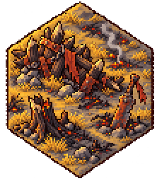
hex.wilds.orc.nearAshfall, Grimtusk Rise, Cinderheath, Redbarrow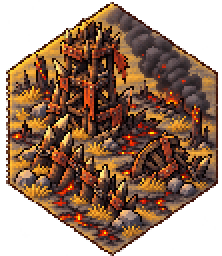
hex.wilds.orc.farScorchmoor, Howling Tor (and Gorehollow, Blackfang when not villages)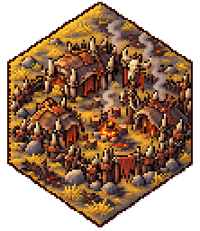
hex.village.orcOrc-land villages (e.g. Gorehollow, Blackfang, Gallowsway)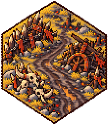
hex.road.orcSkullcairn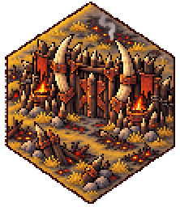
hex.gate.orcAshgate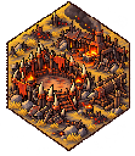
hex.realm.orcEmber Waste, Charnel Plain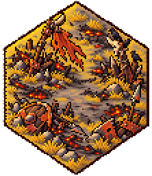
hex.battlefield.orcRedfield, Crowfield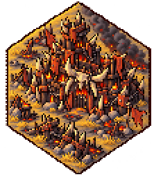
hex.capital.orcSkullthroneThe Gilded Warren (Goblin, north-east)
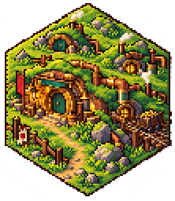
hex.wilds.goblin.nearCopperdell, Tinker’s Hollow, Crookback, Rustpenny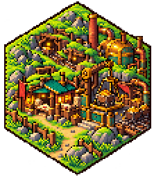
hex.wilds.goblin.farPilfer’s End, Smuggler’s Notch (and Brasswick, Gobbet’s Burrow when not villages)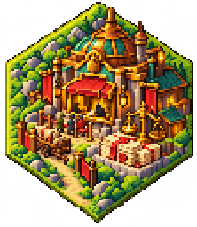
hex.village.goblinGoblin-land villages (e.g. Brasswick, Tollbridge)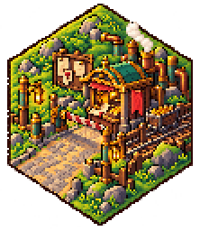
hex.road.goblinHaggler’s Way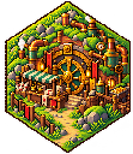
hex.gate.goblinGildgate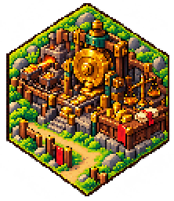
hex.realm.goblinTallow Deeps, Glimmerdell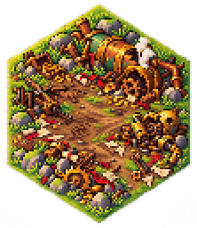
hex.battlefield.goblinDicer’s Field, Swindler’s Field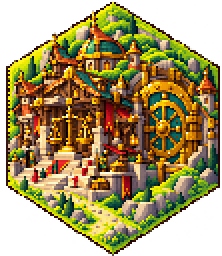
hex.capital.goblinHoardhollowDun Kaldor (Dwarf, south-east)
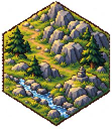
hex.wilds.dwarf.nearFlintholm, Cragmoor, Granitefast, Bergholm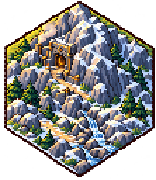
hex.wilds.dwarf.farEmberdelve, Coldforge (and Jarnholt, Grimholt when not villages)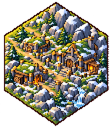
hex.village.dwarfDwarf-land villages (e.g. Jarnholt, Grimholt, Kaldor Road)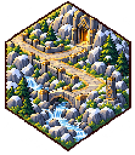
hex.road.dwarfDeepway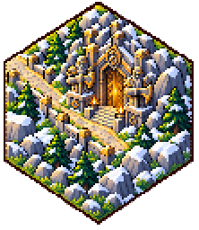
hex.gate.dwarfStonegate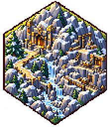
hex.realm.dwarfHrimgard, Gullhall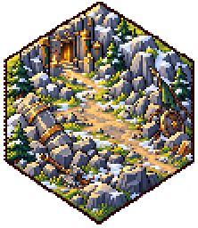
hex.battlefield.dwarfCairnfield, Anvilfield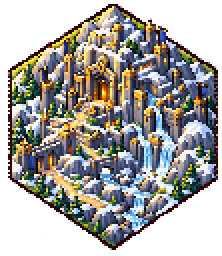
hex.capital.dwarfKaldor DeepEmrys’ Reach (Archmage, south-west)
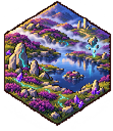
hex.wilds.archmage.nearLlyn Seren, Glasmere, Cwm Hud, Silverveil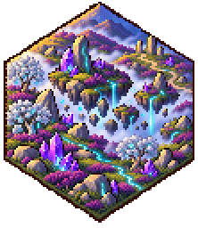
hex.wilds.archmage.farBryn Rhith, Moonwell (and Whisperwood, Pen Dinas when not villages)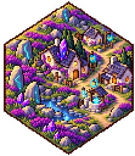
hex.village.archmageVillages of the Reach (e.g. Whisperwood, Pen Dinas, Lantern Way)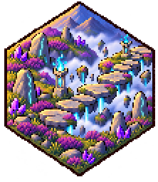
hex.road.archmageMistway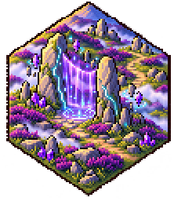
hex.gate.archmageVeilgate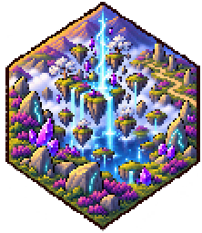
hex.realm.archmageYnys Wen, Elderglass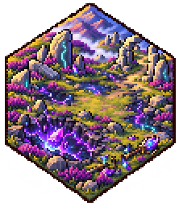
hex.battlefield.archmageStarfall Field, Mistfield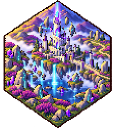
hex.capital.archmageCaer EmrysThe Thornwild (east, the lairs of the Griffins, the Manticore and the Wild Hunt)
not yet
hex.wilds.thornwild.nearBriarholt, Nettlecombe, Hagthorn, Witchbriar, Rosethorn (and Bramblegloom when not a village)not yet
hex.wilds.thornwild.farBlackthorn, Wolfsbane Dell, Hemlock Hollow, Gloaming Gladenot yet
hex.village.thornwildThornwild villages (e.g. Bramblegloom)not yet
hex.lairMouth.thornwildThornmawnot yet
hex.lair.thornwildWitchwood, Thornheart, Rootdeepnot yet
hex.battlefield.thornwildBramblefield, ThornfieldThe Wyrmfells (west, the lairs of the Wyverns, the Basilisk and the Dragon)
not yet
hex.wilds.wyrmfells.nearScaleby, Raventhwaite, Gloomfell (and Drakesfell, Coldfell, Wyrmscar when not villages)not yet
hex.wilds.wyrmfells.farDrakehowe, Worm Tor, Knucklebone Crag, Brimstone Scarnot yet
hex.village.wyrmfellsFells villages (e.g. Drakesfell, Coldfell, Wyrmscar)not yet
hex.lairMouth.wyrmfellsFellmawnot yet
hex.lair.wyrmfellsGold Barrow, Wyrmhall, Black Eyrienot yet
hex.battlefield.wyrmfellsWyrmfield, SmoulderfieldBorders
not yet
hex.village.orc-goblinRaiders’ Tollnot yet
hex.battlefield.orc-goblinPlunder Fieldnot yet
hex.village.goblin-thornwildPricklepursenot yet
hex.battlefield.goblin-thornwildTanglefieldnot yet
hex.village.thornwild-dwarfStonebriarnot yet
hex.battlefield.thornwild-dwarfRockthorn Fieldnot yet
hex.village.dwarf-archmageRunestonenot yet
hex.battlefield.dwarf-archmageRunefieldnot yet
hex.village.archmage-wyrmfellsDreamfellnot yet
hex.battlefield.archmage-wyrmfellsVeilfirenot yet
hex.village.wyrmfells-orcSmokefellnot yet
hex.battlefield.wyrmfells-orcBonefield